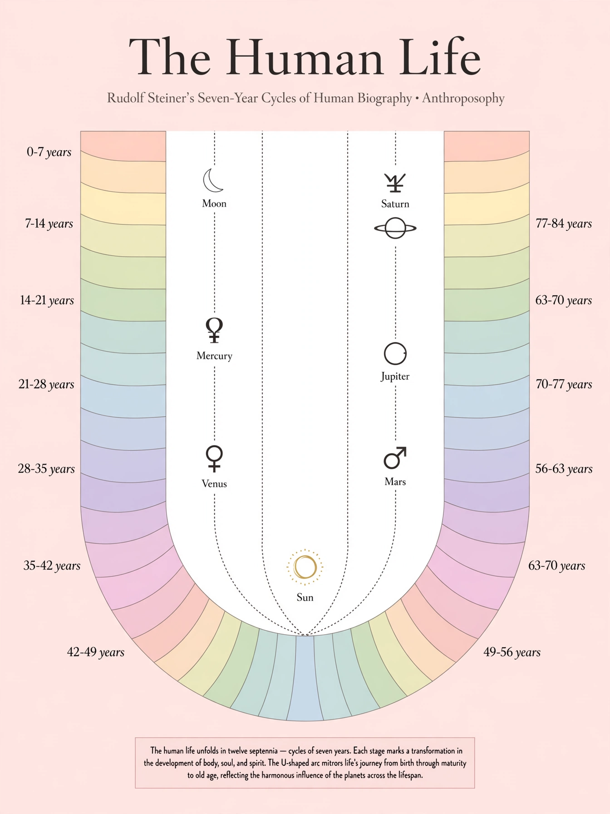

The Pattern
12 septennia (0-84) go clockwise around an open-top parabola. Left side is incarnation, right side is excarnation. Age 35 at the bottom is the pivot.
Planetary Track
Inner dotted Us: Moon (0-7), Mercury (7-14), Venus (14-21), Sun (21-42) at center, Mars (42-49), Jupiter (49-63), Saturn (63-84).
How to Use
Print at 24x36" or A1. Use the writable version to map memories, crises, and gifts. Based on Rudolf Steiner's biography work.
Camera-ready: this page is RGB. For print shop, use the PDF in /print which has 0.125" bleed and 300 DPI. For offset, convert to CMYK in Illustrator.